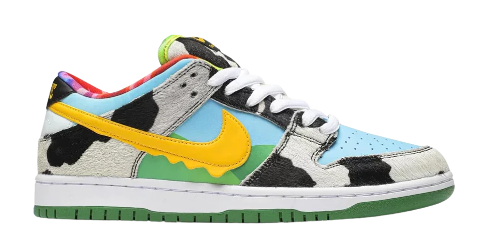

Sobre o Tenis
Em reconhecimento a essa ética compartilhada, a Nike SB está produzindo uma versão do Dunk Low com matizes e texturas que imitam a embalagem da assinatura de Ben & Jerry.
O Ben & Jerry’s x Nike Dunk SB, em sua parte superior de couro retrata céus azuis e pastagens verdes, enquanto as sobreposições de cabelo de pônei são renderizadas em uma estampa de vaca manchada. Um Swoosh de couro amarelo é tratado com um efeito de sorvete derretido para um toque visual adicional. No topo da língua, a etiqueta tecida apresenta uma chamada Chunky Dunky ao lado da marca Nike SB.
Ben & Jerry’s tem feito as coisas à sua maneira desde humildemente servindo sua primeira colher em 1978. A empresa é mundialmente conhecida por produzir sorvete de alta qualidade – mas a marca sediada em Vermont sempre permaneceu comprometida com seus valores essenciais de fazer o bem e ter diversão.
